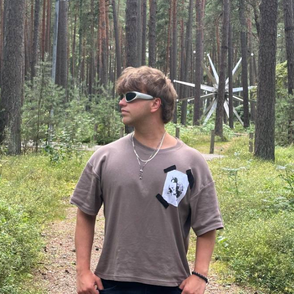

Education
Mechanical Engineering · Technion
Studying Mechanical Engineering at the Technion – Israel Institute of Technology.
I build things.
Then make them better.
I'm Fedor, a Mechanical Engineering student at the Technion – Israel Institute of Technology. I like understanding how things work, then finding ways to make them work better.
My interests move between software, AI, robotics, product development, and entrepreneurship. I enjoy the space where a useful idea becomes something real—through code, design, or a mechanism on the workbench.

A few different directions, connected by the same instinct: make an idea tangible.
I’m drawn to problems that benefit from more than one way of thinking—technical depth, thoughtful design, and a clear sense of who something is for.
No straight line. Just a growing collection of questions, experiments, and ideas.
Studying Mechanical Engineering at the Technion – Israel Institute of Technology.
Hands-on robotics experience, with team leadership and engineering as part of the journey.
Developing a student productivity and schedule-planning web application.
From a heritage-inspired streetwear brand to a tennis-court discovery concept—testing where curiosity can lead.
Interested in building something thoughtful? I’d be glad to connect.